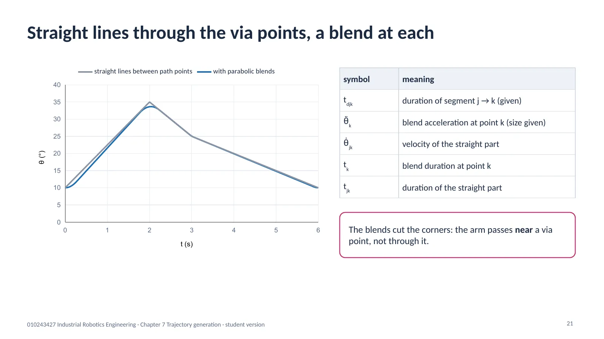
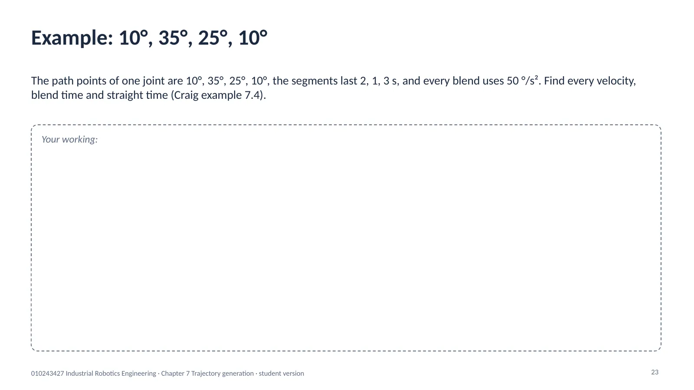
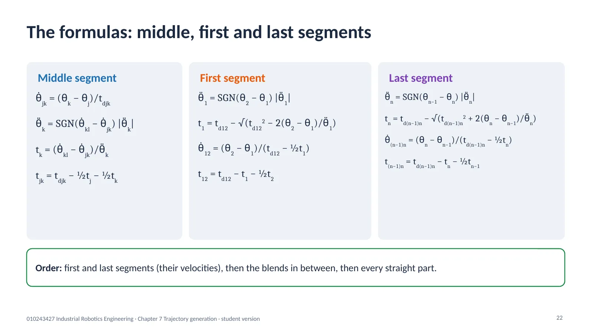
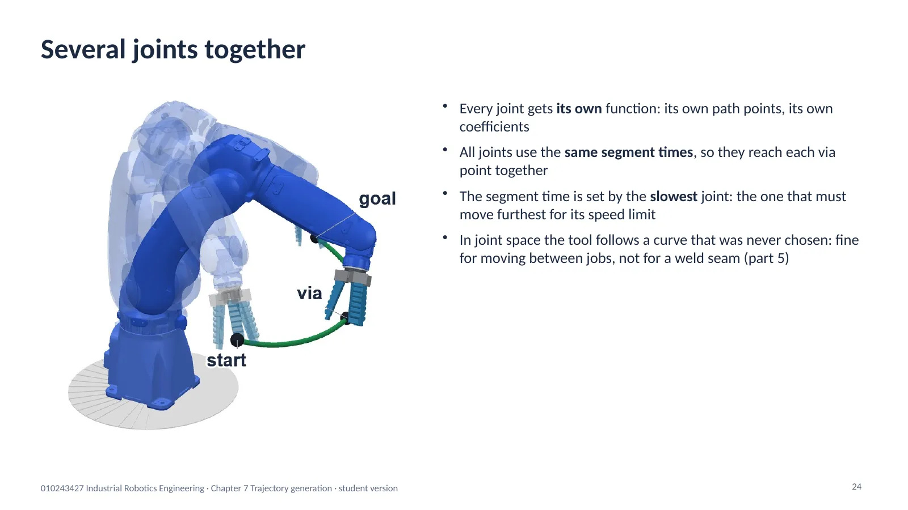
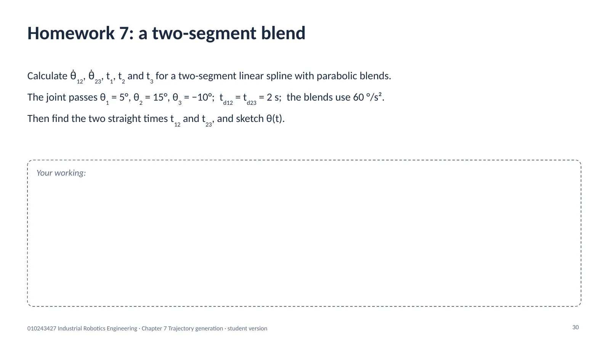

หน้า 7.3 พาข้อต่อจากจุดหนึ่งไปอีกจุดด้วยส่วนตรงที่มีช่วงผสมพาราโบลาที่ปลายทั้งสอง หน้านี้ใช้วิธีเดียวกันกับเส้นทางที่มีจุดผ่าน (via points): ส่วนตรงเชื่อมจุดบนเส้นทางทีละคู่ และที่จุดแต่ละจุดมีช่วงผสมพาราโบลาที่ความเร่งคงที่ วิธีนี้เรียกว่า LSPB (linear segment with parabolic blends: ส่วนตรงต่อด้วยช่วงผสมพาราโบลา) ผู้ใช้กำหนดสามอย่าง: จุดบนเส้นทาง เวลาของแต่ละช่วง tdjk และขนาดของความเร่งที่ช่วงผสม |θ̈k| ระบบคำนวณที่เหลือ: ความเร็วของส่วนตรง θ̇jk เวลาผสม tk และเวลาของส่วนตรง tjk สิ่งที่ต้องจำไว้ตลอดหน้า: ช่วงผสมตัดมุม ข้อต่อจึงผ่านใกล้จุดผ่าน ไม่ได้ผ่านตรงจุด (ยกเว้นจุดต้นและจุดปลาย) หน้านี้ครอบคลุมสไลด์หน้า 21–24 และ 30 มี 4 โจทย์
Page 7.3 took a joint from one point to another along a straight part with a parabolic blend at each end. This page does the same along a path with via points: straight parts join the path points pair by pair, and at every point a parabolic blend of constant acceleration links one straight part to the next. The method is called LSPB (linear segment with parabolic blends). The user gives three things: the path points, the duration of each segment tdjk and the size of the blend acceleration |θ̈k|. The system works out the rest: the velocity of each straight part θ̇jk, the blend times tk and the straight times tjk. Keep one fact in mind throughout: the blends cut the corners, so the joint passes near a via point, not through it (only the first and the last point are reached exactly). This page covers slides pp. 21–24 and 30, with 4 problems.

(ก) ช่วงแรก
(a) The first segment
(ข) ช่วงสุดท้าย
(b) The last segment

(ก) ความเร็วช่วงกลางและเวลาผสมที่จุดผ่าน
(a) The middle velocity and the blend times at the via points
(ข) เวลาของส่วนตรง
(b) The straight times
(ค) มุมของข้อต่อที่ t = 2 s
(c) The joint angle at t = 2 s

(ก) ทำไมทุกข้อต่อต้องใช้เวลาของช่วงชุดเดียวกัน
(a) Why must every joint use the same segment times?
(ข) อะไรเป็นตัวกำหนดเวลาของช่วง
(b) What sets the segment time?

(ก) ความเร็วของส่วนตรง (°/s)
(a) The velocities of the straight parts (°/s)
(ข) เวลาผสม (s)
(b) The blend times (s)
(ค) เวลาของส่วนตรง (s)
(c) The straight times (s)
หน้านี้ตรวจให้เฉพาะตัวเลขของคำตอบ (ใส่ทศนิยม 3 ตำแหน่งสำหรับเวลา และ 2 ตำแหน่งสำหรับความเร็ว) วิธีทำและกราฟของการบ้านชุดนี้เฉลยในห้องเรียน ทำตามลำดับเดียวกับโจทย์ 1–2: ช่วงแรกและช่วงสุดท้ายก่อน แล้วช่วงผสมที่จุดกลาง แล้วส่วนตรง ข้อนี้ไม่มีช่วงกลาง: ช่วงที่ 2 เป็นช่วงสุดท้าย
This page checks the numbers only (give times to 3 decimals and velocities to 2). The worked solution and the plot of this homework are given in class. Work in the order of problems 1–2: first and last segments, then the blend at the middle point, then the straight parts. There is no middle segment here: segment 2 is the last one.